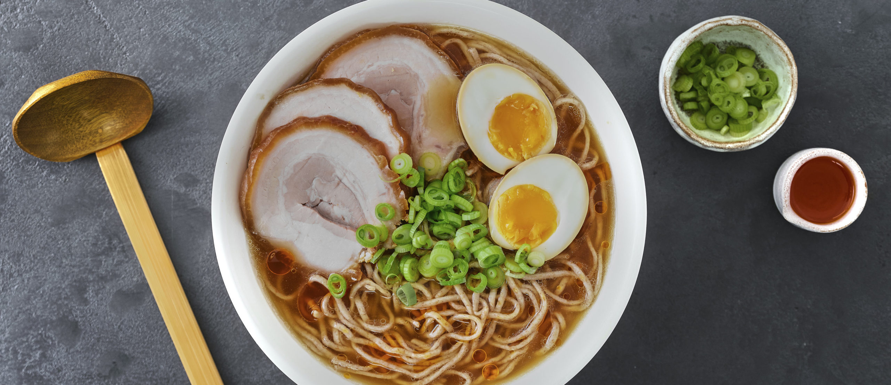
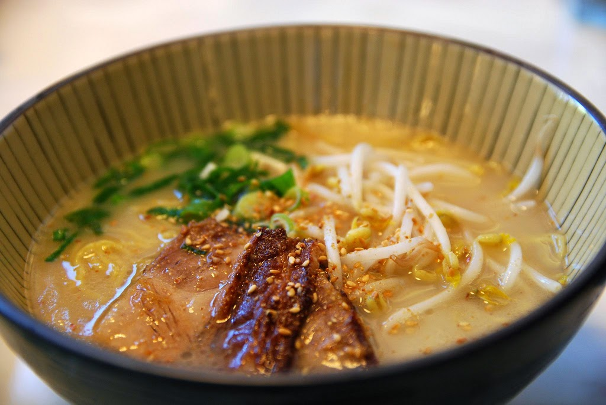

Ramen Tonkotsu




Ingredientes
Caldo Tonkotsu (Paitan)
- 2 manitas de cerdo cortadas en rodajas (1 kg aprox.)
- 1,5 kg de espinazo de cerdo, fresco o salado
- 5 litros de agua
- 5 cebolletas chinas
- 5 cm de jengibre fresco
- 10 dientes de ajo
- Media cebolla
Shio Tare
- 600 ml de dashi (agua, alga kombu, niboshi y katsuobushi)
- 120 g de sal
- 5 ml de vinagre de arroz
Aceite aromático de cerdo ibérico
- 350 g de tocino de cerdo ibérico
- 100 ml de aceite de girasol
- 3 cebolletas chinas
- 3 dientes de ajo
- 1 cucharilla de katsuobushi en polvo
Chashu (Panceta)
- 500 g de panceta sin hueso
- Verduras aromáticas: 4 cebolletas, 6 dientes de ajo, 4 cm de jengibre
- Líquidos: 250 ml de salsa de soja, mirin, sake y agua
- 100 g de azúcar
- 5 setas shiitake deshidratadas
Montaje del Bol de Ramen
- 500 ml de caldo tonkotsu
- 50 ml de shio tare
- 25 ml de aceite aromático
- Noodles (fideos frescos)
- Toppings: 1 huevo cocido, Beni Shoga, setas oreja de madera y cebolleta china
Instrucciones
1. Elaboración del Caldo Paitan
El proceso comienza con un blanqueado previo de los huesos en agua fría durante 12 horas para eliminar impurezas. Posteriormente, se someten a un hervor rápido y constante durante 9 horas, manteniendo la olla tapada y reponiendo el agua evaporada. Tras un total de 10 horas, se cuela el caldo y se recomienda emulsionarlo con una batidora de mano para obtener esa textura blanquecina y cremosa tan característica.
2. Preparación del Shio Tare
Esta base requiere una infusión en frío de alga kombu, niboshi y katsuobushi durante 12 horas. Posteriormente, se calienta suavemente sin llegar a hervir para extraer el umami de los ingredientes deshidratados. Tras filtrarlo, se disuelve la sal en la proporción indicada y se añade un toque de vinagre de arroz para equilibrar los sabores.
3. Elaboración del Aceite Aromático
El aceite se obtiene fundiendo tocino ibérico a fuego lento en un cazo durante media hora hasta que suelte toda su grasa. Una vez filtrada, esta grasa se calienta junto con aceite de girasol, ajo, cebolleta y katsuobushi en polvo. Esta mezcla aporta una capa extra de aroma y lípidos que ayuda a sellar el calor del caldo dentro del bol.
4. Cocción del Chashu
La panceta se enrolla, se brida con cuerda y se cocina durante tres horas y media en una infusión de soja, mirin, sake y azúcar junto a vegetales aromáticos. Es vital darle la vuelta periódicamente para que la cocción sea uniforme. Tras el reposo de una noche en la nevera para que los sabores asienten, la carne se corta en rodajas y se sopletea justo antes de servir.
5. Montaje final del Bol
El montaje debe ser veloz: en un bol previamente calentado, se combinan el tare, el aceite y el caldo emulsionado. Se añaden los fideos cocidos ligeramente al dente y se corona con las rodajas de chashu caramelizadas y el resto de los toppings frescos. Es fundamental servir el plato inmediatamente para disfrutar de la armonía de texturas y temperaturas.